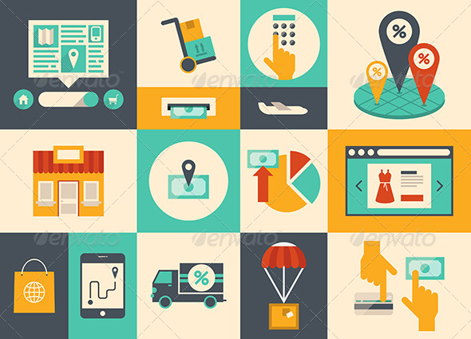
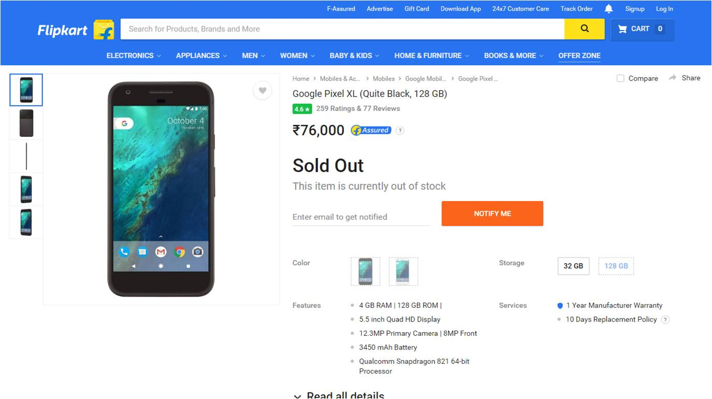
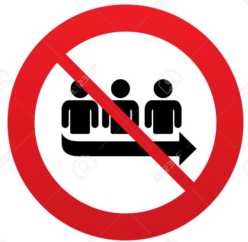
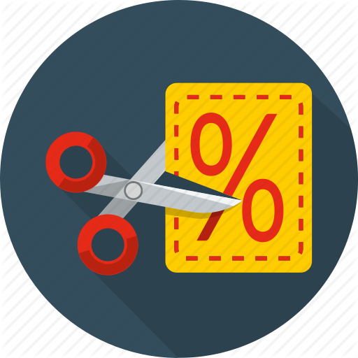
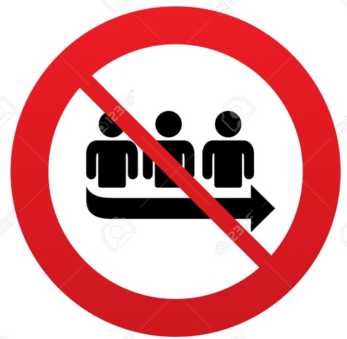
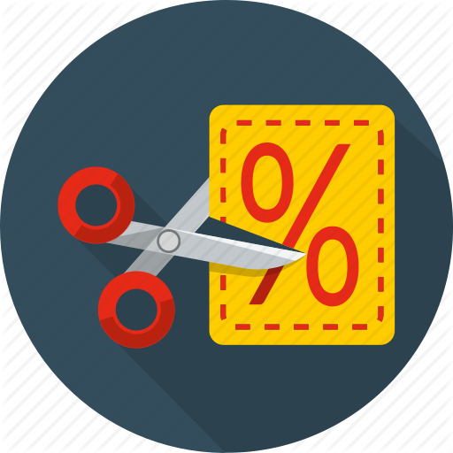

Banking and Shopping
Banking and shopping methods and services have changed immensely because of the advancement in technology. Both these services are now available online! This means that all the banking and shopping needs of the user(s) are met by just clicking the mouse buttons a few times.

(place cursor to zoom)
No one wants to travel around to find out if what they want is available at the stores outside anymore. Now that these services are online, users can use them whenever and wherever they want provided there is an internet connection which is secure and stable.

(place cursor to zoom)
While shopping online, users can buy their desired products among a huge list and many other options. They need not wait in long queues and can pay online by availing the net-banking feature or by just entering their PIN number, which also save time. Moreover, the products would be cheaper, and the customers may even be bombarded with discounts all the time.
Apart from this, there are so many features provided by these shopping websites that allow the customers to add a few products to their wish list and return the product(s) within a period of time if they don't want it.
 


